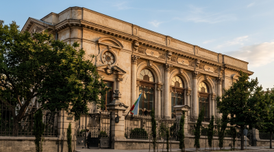

Основные памятники караимского наследия в Севастополе связаны с духовной и общественной жизнью общины,
а также с именами её видных деятелей. К главным объектам относятся караимская кенаса, национальное
кладбище и здание бывших лавок.
Караимская кенасса (молитвенный дом) - это одно из наиболее значимых архитектурных сооружений города, которое
источники называют «жемчужиной севастопольской архитектуры». Первая утверждённая кенасса находилась на
Петропавловской улице в 1840-х годах, но была полностью разрушена во время Крымской войны.Новое здание
на улице Большой Морской начали строить в 1896 году в стиле ренессанс. В 1931 году кенасса была закрыта властями и переоборудована под клуб. Во время Великой Отечественной войны здание
сильно пострадало от авиабомб (сохранилось на 30%), но устояло. В 1953 году здание восстановили с
перепланировкой под спортивные нужды. Сегодня в нём располагается школа бокса (Спортивная школа
олимпийского резерва № 4).
Караимское национальное кладбище расположено в районе Кладбищенской балки и официально объявлено
памятником истории и культуры Севастополя. Это единственный в Крыму столь полно сохранившийся в
городской черте национальный исторический некрополь XIX–XX веков. Самое раннее выявленное захоронение
датируется 1863 годом.

Севастопольская кенасса

Караимское кладбище